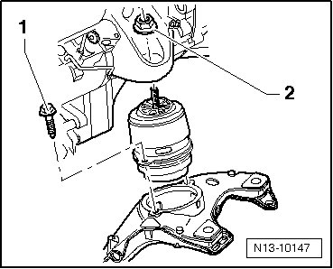
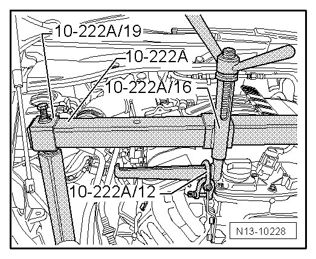
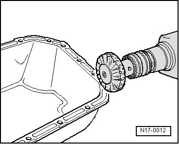
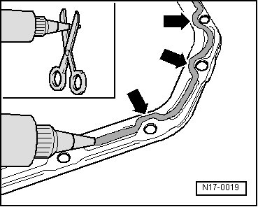
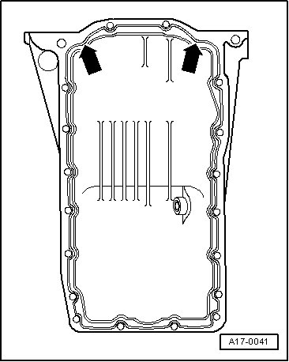

Oil Pan: Service and Repair
Oil Pan
Special tools, testers and auxiliary items required
• Engine support bridge (10 - 222 A)
• Shackle (10 - 222 A /12)
• Adapter (10 - 222 A /16)
• Adapter (10 - 222 A /19)
• Old oil collecting and extracting device (V.A.G 1782)
• Silicon sealant (D 176 501)
• Hand drill with plastic brush attachment
• Flat scraper
• Protective glasses
Removing
- Drain engine oil.
• Observe disposal regulations!
- Disconnect wire connection to air suspension compressor at air filter --> [ Air Suspension Compressor, Disconnecting ] Service and Repair.
- Completely remove air filter with Mass Air Flow (MAF) sensor.
- Remove nuts - 2 - on right and left engine bracket.

- Position adapter (10 - 222 A /16) on engine support bridge (10 - 222 A) with high side of threaded spindle guide facing upward as shown in illustration.
- Now place adapter (10 - 222 A /19) on left and right of engine support bridge (10 - 222 A). Place engine support bridge (10 - 222 A) on longitudinal members.
- Engage engine with two shackles (10 - 222 A /12) at adapter (10 - 222 A /16) and pretension engine slightly.

- Remove subframe --> Suspension, Wheels, Steering 40 Removal and Installation.
- Remove engine carrier. Engine mounts can remain attached to engine carrier.
- Disconnect 3-pin connector from oil level thermal sensor (G266).
- Remove the oil pan.
- Loosen oil pan with light blows of a rubber headed hammer if necessary.
- Remove sealant residue from cylinder block with a flat scraper.
- Remove sealant residue from pan with a rotating brush, e.g. a hand drill with a plastic brush attachment (wear eye protection).

- Clean the sealing surfaces, they must be free of oil and grease.
Installing
• Note the expiration date of the sealant.
• Oil pan must be installed within 5 minutes of applying silicone sealant.
- Cut off the nozzle on the tube of sealant at the front mark (dia. of nozzle approximately 3 mm).

- Apply silicone sealant (D 176 404 A2), as shown, to clean oil pan sealing surface. Sealing compound bead must be:
• 2 to 3 mm thick
• And run on inside of bolt holes - arrows -.
• The sealing compound bead must not be thicker, otherwise excess sealant will enter the oil pan and may block the oil suction pipe strainer.
- Apply silicone sealant (D 176 404 A2) as illustrated to clean sealing surface of oil pan.

- Install oil pan immediately and tighten all oil pan bolts lightly.
- Tighten oil pan bolts to 12 Nm.
• After installing the oil pan the sealant must be allowed to dry for approximately 30 minutes. Only after then may the engine oil be replenished.
The rest of the assembly is basically a reverse of the disassembling sequence.
Engine mount tightening specification --> [ Tightening Specifications ] Engine Installing.